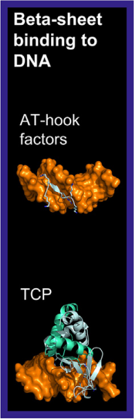

The Beta-Sheet Binding to DNA superclass includes transcription factors that bind DNA through extended strands or beta-sheets, primarily interacting with the minor groove. This superclass is characterized by its unique mode of DNA recognition, distinct from other DNA-binding domains like helix-turn-helix or alpha-helical domains. It comprises two main classes: AT-Hook Factors and TCP Factors. [src].
